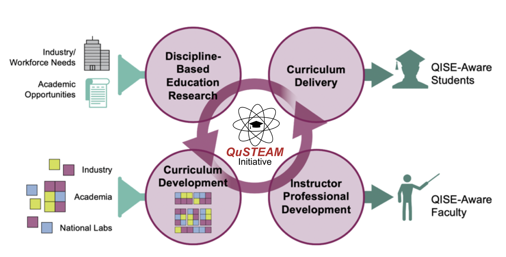

Exciting Avenues in Research and Education in Quantum Information Systems
Morten Hjorth-Jensen [1, 2]
[1] Department of Physics and Astronomy and FRIB Laboratory, Michigan State University, USA
[2] Department of Physics and Center for Computing in Science Education, University of Oslo, Norway
Norway Goes Quantum Workshop, OsloMet, November 18, 2021.
Congratulations
First of all, a great thank you to OsloMet for the inauguration of the first quantum computer in Norway!
And just few days ago IBM announced that they expect to achieve a 1121-qubit quantum processor, and thereby quantum advantage by 2023!
What is this talk about?
The main aim is to give you a short introduction to our
activities and how to build larger Quantum Information Systems (QIS)
(and QT/QC (Quantum Technologies/Quantum Computing) )
collaborations and activities, research and education.
Thanks to
- MSU: Ben Hall, Jane Kim, Julie Butler, Danny Jammoa, Nicholas Cariello, Johannes Pollanen (Expt), Niyaz Beysengulov (Expt), Dean Lee, Scott Bogner, Heiko Hergert, Matt Hirn, Huey-Wen Lin, Alexei Bazavov, Andrea Shindler and Angela Wilson
- UiO: Stian Bilek, Heine Åbø (now OsloMet), Håkon Emil Kristiansen, Øyvind Schøyen Sigmundsson, Jonas Boym Flaten, Kristian Wold (now OsloMet), Lasse Vines (Expt) Andrej Kuznetsov (Expt), David Rivas Gongora (Expt) and Marianne Bathen (Expt, now PD at ETH)
Sponsors
This work is supported by the U.S. Department of Energy, Office of
Science, office of Nuclear Physics under grant No. DE-SC0021152 and
U.S. National Science Foundation Grants No. PHY-1404159 and
PHY-2013047 and the Norwegian ministry of Education and Research for PhD fellowships.
Why? Basic motivation
Overarching keyword: dimension reduction
How can we avoid the dimensionality curse? In quantum mechanical studies there are Many possibilities
- smarter basis functions
- resummation of specific correlations
- stochastic sampling
- many more
Some references
Machine Learning and Quantum Computing hold great promise in tackling the
ever increasing dimensionalities. A hot new field is Quantum Machine Learning, see for example the recent textbook by Maria Schuld and Francesco Petruccione.
- Master of Science thesis of Stian Bilek, Quantum Computing: Many-Body Methods and Machine Learning, August 2020
- Master of Science thesis of Heine Åbø, Quantum Computing and Many-Particle Problems, June 2020, now at OsloMet
- Master of Science thesis of Kristian Wold, Parameterized Quantum Circuits for Machine Learning, September 2021, now at OsloMet
- Marianne Etzelmueller Bathen's PhD, December 2020
Basic activities, Overview
- Machine Learning applied to Quantum Mechanical systems
- Quantum Engineering
- Quantum algorithms
- Quantum Machine Learning
What has happened during the last two years at CCSE@UiO?
During the last two years we have started a large scientific activity
on Quantum Computing and Machine Learning at the Center for Computing
in Science Education (CCSE), with three PhD students hired since
October 2019 and several master of Science students. This activity spans from the development
of quantum-mechanical many-particle theories for studying systems of
interest for making quantum computers, via the development of machine learning and quantum
algorithms for solving quantum mechanical problems to exploring
quantum machine learning algorithms.
In 2022/2023 we expect to hire a post-doctoral fellow working on
quantum computing (many-body theories) at the center for Materials Science and Nanotechnology at the University of Oslo. We also expect to hire a new PhD student, see https://www.mn.uio.no/compsci/english/phd_programme/projects/physics/machine-learning.html
More activities
- Center of Materials Science UiO, Lasse Vines (Expt) Andrej Kuznetsov(Expt), David Rivas Gongora (Expt) and Marianne Bathen (Expt, now PD at ETH)
- Gemini center on Quantum Computing (SINTEF-UiO-NTNU)
Quantum Engineering
Quantum Computing requirements
- be scalable
- have qubits that can be entangled
- have reliable initializations protocols to a standard state
- have a set of universal quantum gates to control the quantum evolution
- have a coherence time much longer than the gate operation time
- have a reliable read-out mechanism for measuring the qubit states
- and many more
Candidate systems
- Superconducting Josephon junctions
- Single photons
- Trapped ions and atoms
- Nuclear Magnetic Resonance
- Quantum dots, expt at MSU
- Point Defects in semiconductors, experiments at UiO, center for Materials Science
- more
Electrons (quantum dots) on superfluid helium
Electrons on superfluid helium represent a promising platform for investigating
strongly-coupled qubits.
Therefore a systematic investigation of the
controlled generation of entanglement between two trapped electrons
under the influence of coherent microwave driving pulses, taking into
account the effects of the Coulomb interaction between electrons, is
of significant importance for quantum information processing using
trapped electrons.
- Time-Dependent full configuration interaction theory
- Time-dependent Coupled-Cluster theory
- Designing quantum circuits
Education
- Build up a series of courses in QIS, inspiration QuSTEAM (Quantum Information Science, Technology, Engineering, Arts and Mathematics) initiative from USA
- Bachelor program in Computational Science and Data Science
- study direction/option in quantum technologies
- study direction/option in Artificial Intelligence and Machine Learning
- Plans at UiO for such a program, but also a more dedicated one on Computational Physics
Master of Science program in Computational and Data Science
UiO has already MSc programs in CS and DS
PhD program in CS and DS
with directions in quantum technologies
with directions in Artificial Intelligence and Machine Learning
Coordination across university boundaries?
QuSTEAM Model

Courses, Prototype
The Center for Computing in Science Education at UiO could be the entity which provides the pedagogical resourses. It has research experience
on how do we design curricula so that students develop deep knowledge that is connected and useful.
Topics in a Bachelor of Science/Master of Science
- Information Systems
- From Classical Information theory to Quantum Information theory
- Classical vs. Quantum Logic
- Classical and Quantum Laboratory
- Discipline-Based Quantum Mechanics
- Quantum Software
- Quantum Hardware
- more
Important Issues to think of
- Lots of conceptual learning: superposition, entanglement, QIS applications, etc.
- Coding is indispensable. That is why this should be a part of a CS/DS program
- Teamwork, project management, and communication are important and highly valued
- Engagement with industry: guest lectures, virtual tours, co-ops, and/or internships.
- Diversity needs to be a priority
- Mentorship should begin the moment students enroll.
Observations
- Students do not really know what QIS is. This may be important when advertising
- There is conflation of “Quantum Information Science” with “Quantum computing”.
- Students perceive that a graduate degree is necessary to work in QIS. A BSc will help.
Future Needs/Problems (US observations mostly but transfer most likely to Europe as well)
- There are already (USA) great needs for specialized people (Ph. D. s, postdocs), but also needs of people with a broad overview of what is possible in QIS.
- There are not enough potential employees in QIS (USA). It is a supply gap, not a skills gap.
- A BSc with specialization is a good place to start
- It is tremendously important to get everyone speaking the same language. Facility with the vernacular of quantum mechanics is a big plus.
- There is a huge list of areas where technical expertise may be important. But employers are often more concerned with attributes like project management, working well in a team, interest in the field, and adaptability than in specific technical skills.
© 1999-2021, Morten Hjorth-Jensen. Released under CC Attribution-NonCommercial 4.0 license